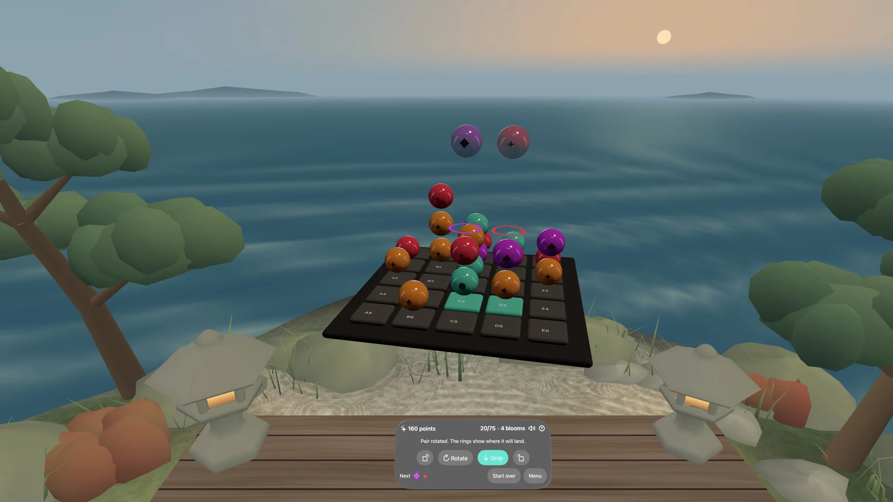
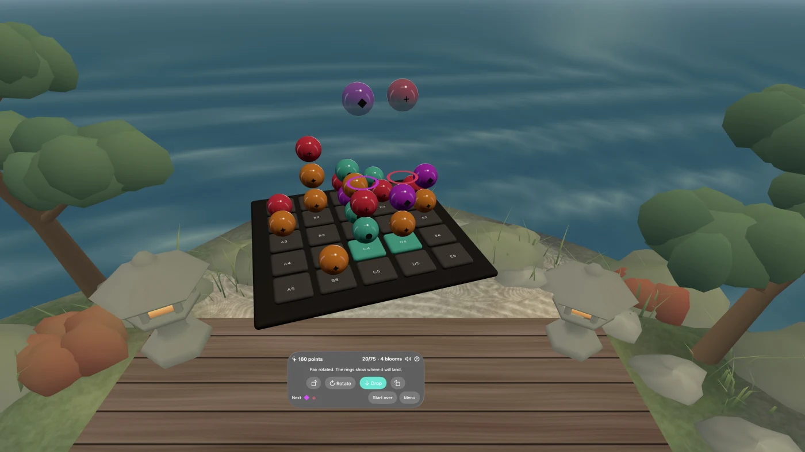
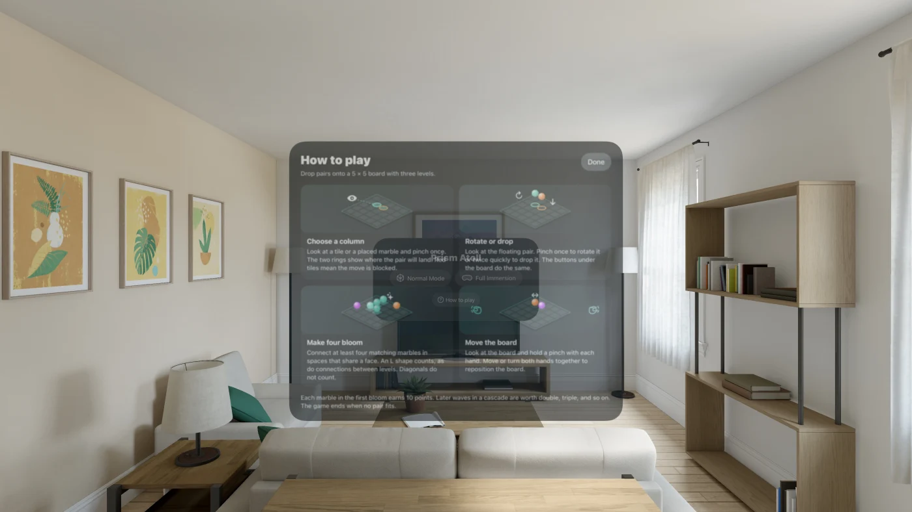

A spatial puzzle for Apple Vision Pro
Make colors
bloom.
Connect glassy marbles in a quiet garden by the sea. Plan your next move, turn the board with both hands, and play at your own pace.
Explore the puzzle with mouse, touch or keyboard controls.

The puzzle
Four colors. Three levels.
Drop pairs onto a five-by-five board. Connect at least four matching marbles through shared faces to make them bloom. Marbles above them fall and can trigger a cascade.
- Choose a column
- Look at a tile and pinch to select it. The rings show where the marbles will land.
- Turn and drop
- Look at the floating pair. Pinch once to turn it or twice to drop it.
- See every level
- Hold a pinch with each hand to turn or move the board while you play.


Two ways to play
Your room or the shore
In Normal Mode, the board sits in your space. Full Immersion takes you to a Japanese-inspired garden facing the sea. An original ambient soundtrack plays in both modes.
Your game is saved on your Vision Pro so you can switch modes and pick up where you left off.
See the controls